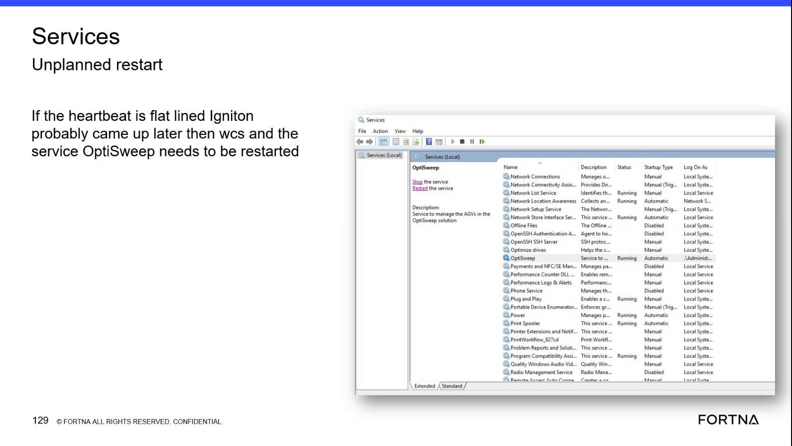
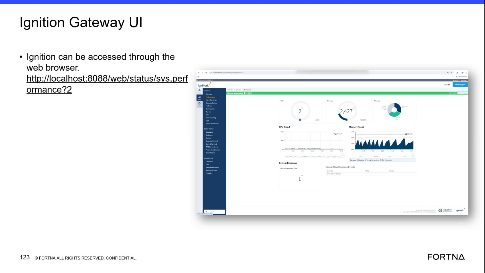

| Procedure ID | proc_restart_optisweep_service_flatlined_tipper_heartbeats_v1 |
|---|---|
| Title | Restart the OptiSweep Windows Service in Windows Services After Flatlined Tipper Heartbeats in the Ignition Gateway |
| Procedure Type | recovery |
| Primary Role | L1_support |
| Support Safe | Yes |
| Capability Tags | opc_connection_or_tipper_heartbeat, wcs_service_health |
| Access Surface | ignition_gateway, event_viewer |
| Audience Roles | L1_support, L2_support |
| Failure Pattern Tags | opc_connection_faulted, gateway_unhealthy, service_crash_or_restart |
| Validation Status | needs_sme_review |
| Merge Status | source_finalized |
Use the Ignition gateway to verify that a tipper heartbeat is flat-lined, then use Windows Services to locate and restart the OptiSweep service. Confirm that the service returns to Running and that the Ignition gateway heartbeat is no longer flat-lined.
Use this Ignition gateway and Windows Services procedure when a live tipper heartbeat is flat-lined or missing, including after an unplanned restart where Ignition may have started later than WCS and the OptiSweep service did not reestablish OPC-related heartbeat communication.


Responsible role: L1_support
Instruction:
In the Ignition gateway, inspect the live heartbeat indication for the affected tipper and determine whether heartbeat communication is being received or is flat-lined.
Expected result:
The affected tipper's live heartbeat indication is identified as either active or flat-lined, providing the basis for the service-restart decision.
Stop or Escalate If:
Responsible role: L1_support
Instruction:
Open Windows Services MMC, locate the service named "OptiSweep," and review its Status.
Expected result:
The Windows Services console displays the OptiSweep service entry and its current Status.
Stop or Escalate If:
Responsible role: L1_support
Instruction:
In Windows Services, use the OptiSweep service's "Restart the service" control.
Expected result:
Windows Services accepts the restart request for the OptiSweep service.
Stop or Escalate If:
Responsible role: L1_support
Instruction:
In Windows Services, verify that the OptiSweep service returns to a Running state. Then return to the Ignition gateway and recheck the affected tipper's live heartbeat indication.
Expected result:
The OptiSweep service shows Running and the affected tipper heartbeat is no longer flat-lined.
Stop or Escalate If: